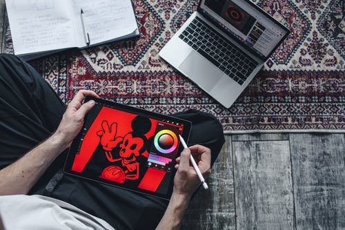
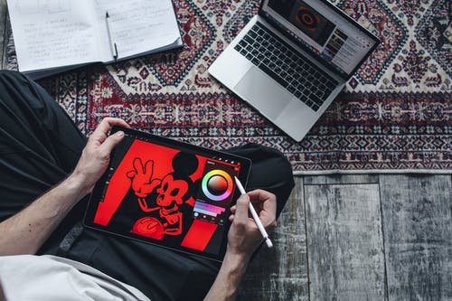

Presentación
Sobre mi:
Hola mi nombre es Lucía Calatrava Masiá tengo 19 años y estoy estudiando 2ºSMR (Sistemas Microinformaticos y redes); este es un proyecto de Aplicaciones Web en el cual se esta utilizando HTML Y CSS, para hacer una pagina web sobre nosotros.
¿Cómo me defino?
- Simpática
- Sensible
- Buena persona
- Amable
- Trabajadora
¿Qué no dejaría de hacer por nada del mundo?
Mis dos actividades favoritas son divertirme jugando a videojuegos y salir con mis amigos a cualquier aventura.
 
¿Qué aplicaciones web uso más?
Uso pocas aplicaciones web ya que despues de todo el dia estando en el ordenador me apetece de vez ewn cuando desconectar, la que mas utilizo es Spotify.
Cuando quiero reirme un rato utilizo la pagina web de Twitch.